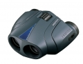

器材库 > 双筒望远镜 > 8X25 UCF WP BINOCULAR

详细规格
发布日期
未知
厂家推荐价格
800.00 （人民币）
放大倍率
8倍
物镜直径
25mm
实际视场
6.2度
1000米处的视野
108m
出射光瞳直径
3.1mm
相对亮度
9.6
眼点距
15mm
最近对焦距离
1.9m
瞳距调节
57-78mm
重量
350g
长度
110mm
宽度
116mm
类型
保罗式棱镜中心对焦式（联动2轴型）内对焦
该产品暂无存档的网友点评
产品图 / 样片
1
评测 / 相关文章
该产品暂无存档的评测文章